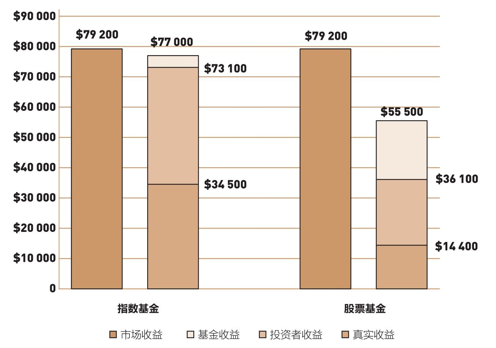
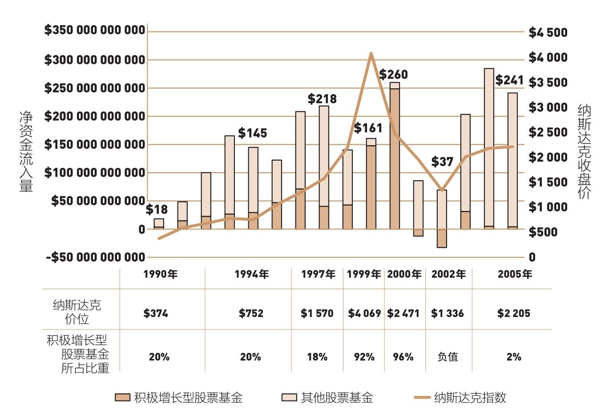

为什么大多数投资者的实际平均收益率总是低于相关机构公布的“应得收益率”？
该出手时不出手，该收手时晚收手，为什么大多数投资者总在错误的时间选择错误的投资对象？
很高兴看到许多业内人士同意我的观点，包括富达麦哲伦基金的彼得·林奇、投资公司学会前任董事长乔恩·福塞、《疯狂货币》主持人詹姆斯·克拉默，以及AQR资本管理公司的克利福德·阿斯尼斯（详见第4章）。典型的股票共同基金赚取的收益必然低于以标准普尔500指数为基础的指数基金。
然而，基金投资者可以独享这些收益的想法只是美好的幻想。这不仅仅是幻想，简直就是妄想。投资者面对的现实要残酷得多。对于基金经理提供的服务，基金持有者除了要支付昂贵的成本，还得支付更高的额外成本。我将在本章解释其中原因。
基金经理按照传统的时间加权法，调整基金投资组合中的资产价值，借以反映所有股利再投资以及分派的资本利得。在过去25年，普通股票基金年的收益率为7.8%，比标准普尔500指数的收益率9.1%少了1.3%。可是，这些收益并不是基金投资者实际获取的报酬，他们实际得到的回报要少得多。
要确定普通基金投资者能赚到的收益，我们就必须考虑资金加权收益率（dollar-weighted return），从而囊括资金流入流出给基金带来的影响(1)（提示：多数基金因为表现优异而吸引资金流入，也会因为表现不佳而造成资金流出）。
如果按传统方法计算过去25年内投资者的平均收益率，我们就会发现，投资者所赚得的平均收益率并不是基金公布的7.8%，而是6.3%，也就是说，投资者每年都会少赚1.5%。
指数基金也会遇到类似问题——行情好，资金流入；行情差，资金流出。不过投资者仍然可以赚取8.8%的收益，只比基金计算的收益少0.2%。
诚然，在这25年里，标准普尔500指数实现了9.1%的年均收益率，而普通股票基金的年均收益率也达到7.8%，但普通股票基金持有人的年均收益率只有6.3%。
如果按复利计算该期间的损益，巨大的成本平均要给每只基金带来1.5%的损失。如果此时出现投资时机不佳和基金选择不当的情况，损失就更大了。
图7-1显示自1991年，投资于低成本的标准普尔500指数基金的10 000美元会获得名义收益77 000美元；而投资于普通股票基金的10 000美元只能得到55 500美元，约为前者的72%。这里只考虑了基金，而普通股票基金持有人的复利年均收益仅有36 100美元，较指数基金投资者赚取的73 100美元少了50%。这些惩罚被叠加在了一起！

图7-1 指数基金与股票基金：10 000美元初始投资的利润，1991—2016年
注：假设所有股利和资本利得均用于再投资。
当把通货膨胀列入考虑时，所有收益的价值又会大幅下降。这段时间的年均通胀率达到2.7%，因而指数基金的真实年均收益率下降到6.2%，而普通股票基金持有人的真实年均收益率跌落至3.6%。如果从金额来看，指数基金累积的真实收益价值会变成34 500美元，而普通股票基金持有人的真实收益为14 400美元。老实说，你可能真的难以想象会存在如此大的差距，但事实就是如此。
尽管这些数据表明，基金投资者的回报远低于基金收益，但它们间的差距到底有多大，却无从知晓(2)。虽然这个针对股市真实收益、基金平均收益，以及基金所有者平均收益的检验不够精确，但它一针见血地揭示出了其中的问题。
不管数据精确与否，这些证据都毫无争议地表明：
◆股票基金的长期收益落后于股票市场，主要是因为成本；
◆基金投资者的收益，远低于基金的收益。
怎样才能解释如此令人瞠目结舌的落差呢？简单来说，是因为投资时机和基金选择不当。
首先，投资于股票基金的投资者要为投资时机选择不当付出代价。在整个20世纪80年代和90年代初，市场形势一片欣欣向荣，蕴藏着巨大的价值，但投资者很少把自己的钱投入在股票基金上。之后，盲目的乐观和贪婪，再加上共同基金从业者的推波助澜，让投资者在股市最热时将大量资金投入股票基金。
其次，错误的基金选择又让他们尝到苦头。这些基金在过去拥有优异的业绩，但就像我们稍后看到的那样，很快衰败了。为什么？简单来说，是因为基金的高额收益趋向平均值回归，甚至反转［我们将在第11章探讨均值回归（RTM）］。投资者在错误的时机选择了错误的基金，正是因为他们没有遵循常识。
这种滞后效应的影响广泛而深入。在2008—2016年最受欢迎的200种股票基金中，居然有186种基金在过往的10年内支付给投资者的收益小于其披露的收益！而20世纪90年代末的“新经济”狂潮，更是会让我们对这种现象感到震惊。当时，基金行业突然间冒出了许多的新基金，它们的经营风险大多远远超过股票市场本身，盲目的乐观和贪婪，以及共同基金从业者的推波助澜，让投资者在股市最热时将大量资金投入股票基金，使问题变得更加严重。
在市场行情飙升时，投资者投入大笔资金购买股票基金。1990年，在股票价格还很便宜时，股票基金的净流入资金只有180亿美元，但是到了股票价值已经被严重高估的1999年和2000年，这个数字却高达4 200亿美元（见图7-2）。

图7-2 错误选择投资时机和基金的惩罚：美国股票基金的净流入资金
更严重的是，投资者对“新经济”基金、科技基金和业绩成长型基金趋之若鹜，而对相对较为保守的价值型基金冷眼相待。1990年，只有20%的资金投资于激进的成长型基金，但到1999年和2000年年初，基金收益达到峰值时，却有高达95%的资金涌入这类基金。2002年泡沫破裂后，投资者买入成长型基金的数额回落到360亿美元。此时市场即将触底，投资者却仍然把资金抽出成长型基金，转而投资于价值型基金，不过已经来不及了。
在2008—2009年金融危机及稍后的恢复期，基金投资者的收益相当平庸。长久以来，基金投资者依据过往的业绩来选择基金，放任情绪甚至是贪婪凌驾理性。许多投资者对金融危机期间市场剧烈下跌反应过激，以至于在股票市场最低点出场。这些人大多错失了随后的上涨行情。
基金行业一直在操纵投资者的情绪。它们一再推出迎合潮流但收费高昂的新基金，然后竭力宣传这些新基金。公平地说，如果两种永远只能起反作用的因素——投资者的情绪和基金业的营销——结合在一起，最终只会带来灾难。
在短期内，基金业不可能放弃推出新产品或是强力营销，至于投资者，他们恐怕还需要一些时间才会觉悟。可是，理性的投资者不仅应注意到第4章提到的低成本原则，还需要牢记本章提到的观点，排除情绪的影响。换句话说，投资者不应该追逐行情。
指数基金的美妙之处不仅体现在它的低费用，更重要的在于，它绝不像无数一诺千金但却毫无回报的基金，它的魅力永不减退。和那些热门基金不同的是，无论市场阴晴涨跌，指数基金在整个投资期内都将岿然不动，情感永远也不会进入你的收益计算公式。在投资中，赢家的公式就是通过指数基金而拥有整个股市，然后把自己变成完全的旁观者，什么也不所做。无论发生什么，一定要坚持你所正在做的事情。
沃伦·巴菲特认同我的观点。请看一下巴菲特的“4E”原则：“费用（expense）和情绪（emotion）是股票投资者（equity investor）最大的敌人（enemy）。”另外，麻省理工学院教授、《适应性市场》（Adaptive Markets）一书的作者罗闻全也是“通过购买并持有指数基金进行投资”。
但最令人惊讶的是，查尔斯·施瓦布（Charles Schwab）身为嘉信理财——世界级的经济商——的创始人，虽然大力推销股票交易，但对指数基金也情有独钟。谈到人们为什么会投资于主动型基金时，他回答：“在市场上玩耍也是一种快乐……选择正确的坐骑是人的本性……（但是）和普通人相比，我更像是一个指数投资者……我们可以对未来作出非常准确的预测……无论是10年、15年还是20年后，你的投资业绩都将处在前15%的行列。既然如此，为什么不振作精神尝试一下呢？”（施瓦布先生个人投资组合中大部分是指数基金。）
(1)如果1亿美元在某一年实现了30%的收益，但投资者在该年度最后一天购买了10亿美元的股份，那么投资者所取得的平均收益率就只有4.9%。
(2)基于晨星公司发布的过去25年里以时间加权的全部基金的平均收益和真实的以美元加权的收益估算出来的差额。